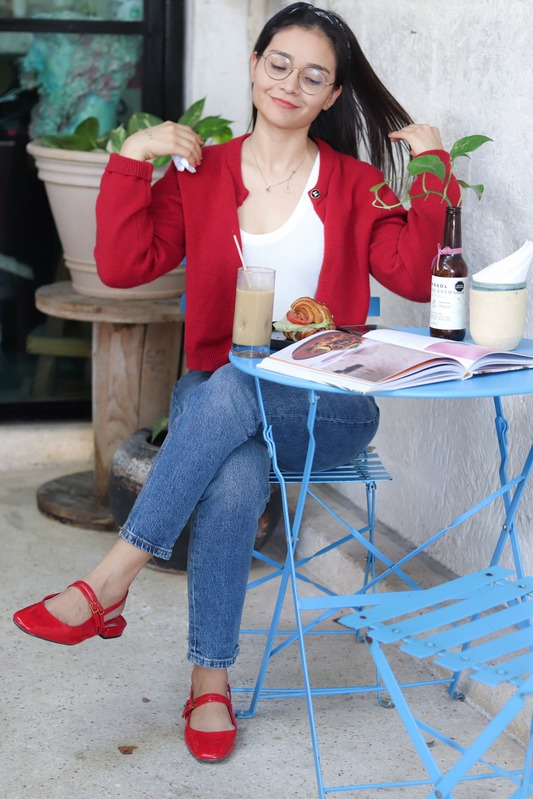

Sobre Mí
Mi viaje comenzó con una doble pasión: la salud y la magia de la cocina

Una Combinación Única
Mi viaje comenzó con una doble pasión: la salud y la magia de la cocina. Desde pequeña, me ha fascinado cómo los alimentos pueden transformar nuestras vidas, tanto por dentro como por fuera.
Esta combinación única de nutrición y gastronomía me permite crear planes de alimentación que no solo son nutritivos, sino también deliciosos y realistas. Entiendo que comer bien no debe ser un sacrificio, sino un placer sostenible.
Mi enfoque va más allá de contar calorías: se trata de entender tu estilo de vida, tus preferencias y tus objetivos para crear un plan que realmente funcione para ti a largo plazo.
Educación y Experiencia
Licenciatura en Nutrición
Universidad Tecmilenio - 2022
Especialización en nutrición clínica, deportiva y patologías metabólicas
Gastronomía
Universidad Tecnológica de Cancún
Conocimiento profundo de técnicas culinarias, preparación de alimentos y maridajes
Experiencia Profesional
6+ años trabajando con pacientes de diversos perfiles
Más de 500 pacientes atendidos exitosamente
Especialización en control de peso, patologías metabólicas y problemas hormonales
Cómo Trabajo
Sin Culpa
Creo en la alimentación consciente, no restrictiva. No hay alimentos prohibidos, solo balance.
Personalización Total
Cada persona es única. Tu plan se adapta a tus gustos, horarios, presupuesto y objetivos.
Resultados Sostenibles
No busco cambios drásticos temporales, sino hábitos saludables que duren toda la vida.
Educación
Te enseño el porqué detrás de cada recomendación para que tomes decisiones informadas.
Trabajemos Juntos
Si buscas un enfoque integral, personalizado y sin restricciones extremas, estoy aquí para ayudarte.